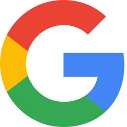
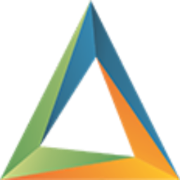
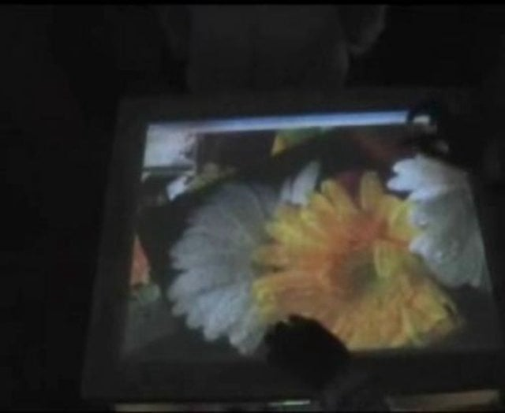
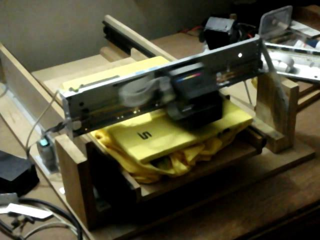
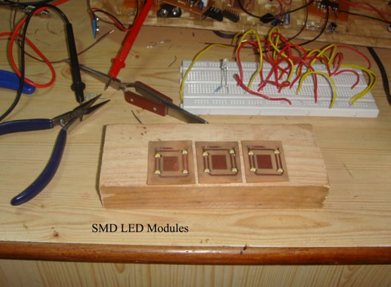
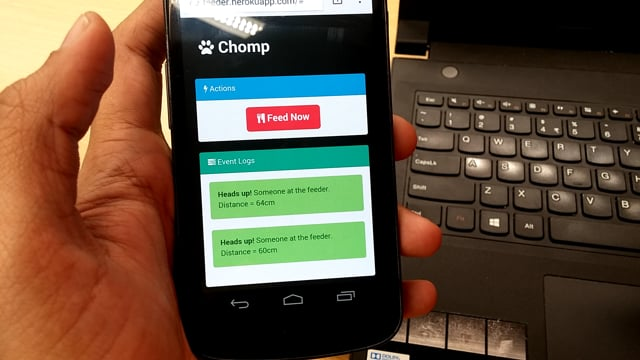
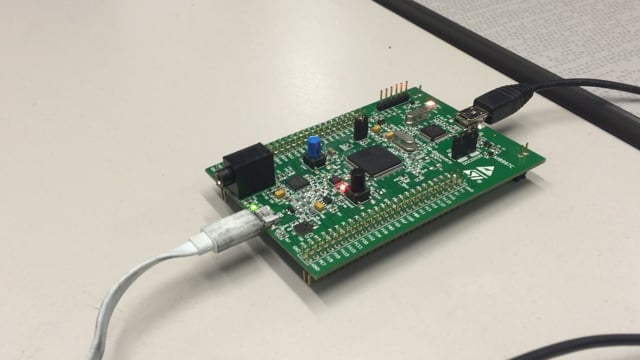
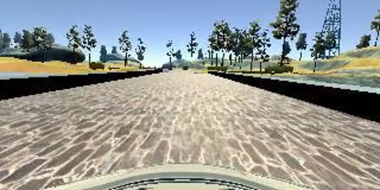

Madhur Jain
Engineer by day. Builder by night.
I'm a software engineer at Google, working on YouTube Ads infrastructure. I've worked across the stack (hardware, firmware and software), so if something's slow, I can usually tell you which layer is lying. Lately I've been building where software meets the physical world:
Code review, but for buildings
Software gets checked automatically on every commit; the electrical drawings for a hospital still get checked by hand, page by page. I'm building AI that reads 100+ electrical drawings, finds every breaker, feeder and transformer, and checks them against the NEC before anything gets built.
Robots that work on day one
Robots don't have to be perfect to be useful. I'm building low-latency vision and teleoperation so a remote human can step in when a robot gets stuck, and every save teaches it to need less help.
Where I've been

Google · Ad infrastructure & privacyBuilding identity, personalization and compliance systems across AdMob and YouTube Ads — $500M+ ARR worth of systems that have to keep regulators, lawyers and advertisers happy at the same time.
Amazon AWS · IoT & video
Designed and built video ingestion for AWS IoT TwinMaker, piping live and recorded camera feeds into digital twins of industrial sites. Launched at re:Invent 2021.
SanDisk · SSD firmware & systems
Brought up the custom NVMe storage inside the Xbox Series X|S with Microsoft, and squeezed SSD power down so laptops last longer. Replaced a legacy LabVIEW test rig and cut validation from 8 hours to 2.
Those shorter Xbox load screens? You're welcome.
Pleximus · Co-Founder
Bootstrapped a 10-person product shop serving clients across three continents. Built an industrial control product that talked to PLCs (0 → $100k ARR), a fleet-tracking SaaS, and a real-time packet filter.
Learned that the hardest protocol is the invoice.

Infosys → a startup → eNTesla · The origin storyStarted at Infosys, then left to build FreeMyCall.com with a friend (great website, flawed business model). Then went back to my electronics roots at eNTesla, an embedded startup, designing a medical audiometer from schematic to PCB to firmware.
Lesson learned: hardware is hard.
Blast from the past
Before the servers, there were soldering irons.

Multi-touch table2008 · inspired by Microsoft Surface & Jeff Han, before touchscreens were cool
T-shirt printer2010 · built with my dad, lots of woodwork
Illuminate2011 · 555-timer wall art, won a door prize
Pet feeder2015 · ESP8266 + MQTT, dinner over the internet
Audio FFT2016 · Cortex-M4 + FreeRTOS, music but as math
Self-driving car2017 · taught a simulated car to drive by watching meMore on GitHub, including gopee (a self-hosted proxy with 335★) — 59 repos and counting, some of them even finished.
School
M.S. Computer Engineering, New Jersey Institute of Technology — 4.0 GPA, which I am contractually obligated to mention.
B.E. Electronics, Mumbai University — where I learned chips run on magic smoke, and you must never let it out.